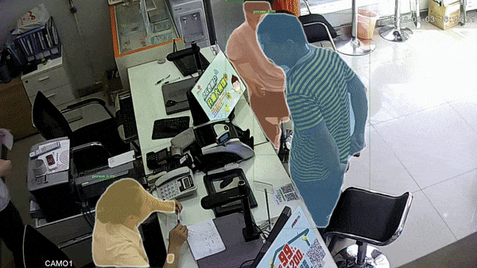
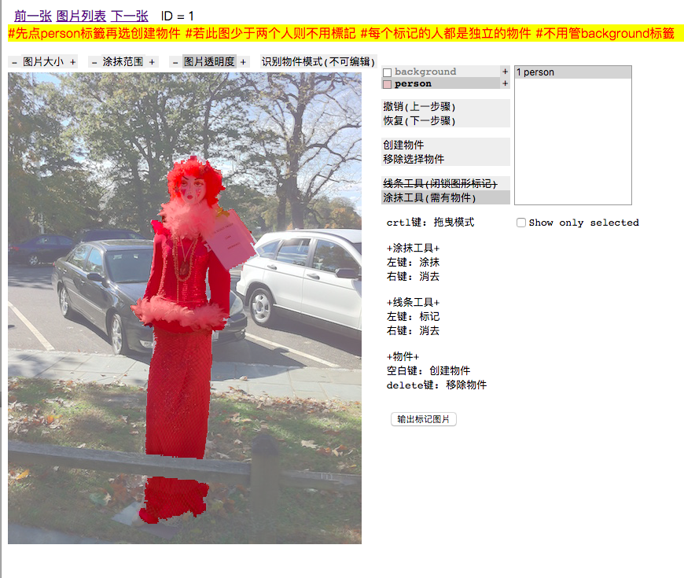
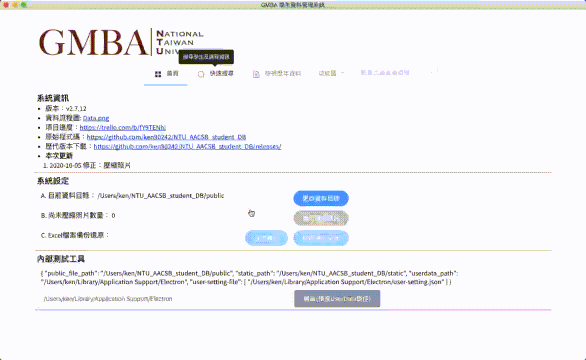
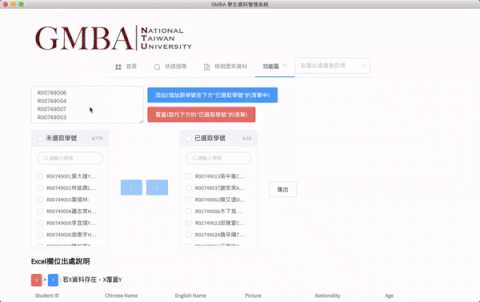

Papers
-
A Deep Learning Model for Extracting Live Streaming Video Highlights using Audience Messages.
[pdf]
[demo]
Hung-Kuang Han, Yu-Chen Huang, and Chien Chin Chen.
in Artificial Intelligence and Cloud Computing Conference (AICCC), 2019
Projects
-
Trend Micro: Virtual Machine Configuration Tool.
[download]
[
C++ | C# | VBScript | Shell]
A GUI wizard application guides users to build sandboxed virtual machines. My recent delivery feature of that application supports users’ ability to create Linux sandboxed virtual machines. I used C# and Shell Script to enable the wizard application to set up an imported virtual machine automatically, install the required packages, and optimize the sandboxed virtual machine environment. This feature provides users a better chance to detect viruses by providing more sandboxed virtual machine options; now, over 34% of the existing sandboxed virtual machines are Linux-based.
-
Trend Micro: Virus Analyze Integration Core Module.
[
Python | C++ | Shell]
I responsible for handling the preprocess procedure when file samples were sent to the system to scan for viruses. One of the features I developed supports decompressing a compressed EGG-format file sample, which is mainly used in Korea. I used C++ to refactor the open-source project and integrate it into the current system’s existing procedure.
-
Diseases Detection in X-Ray images.
[report]
[code]
[
Python | VGG19 | Grad Cam]
In the capstone project of "Applied Deep learning," I developed a model to detect diseases in x-ray images by using a pre-trained VGG19 model and Grad-CAM to highlight bounding boxes. I assumed that the area, which CNN pays particular attention to while doing classification, should be the lesion's location. I used resampling, weighted loss function, and data augmentation to mitigate data imbalance problem.
-
Pedestrians Detection Project.
[details]
[
Python | JavaScript | Mask RCNN]


This project was my internship's capstone project at China Unicom, aiming to detect customer amount using real-time videos. I implemented the model with the state of art model: Mask-RCNN and significantly improved the accuracy performance. Also, I developed an online annotation tool to help users annotate ground truth images and generate JSON format output.
-
Quora-liked Forum.
[code]
[demo]
[
Python | React.js | Django | WebSocket | Redis | Nginx]
This project aimed to build a forum site like Quora. I Implemented an interactive interface by using React and Redux and the asynchronous AJAX framework Axios. I also created sustainable real-time notifications and instant messaging with WebSocket Reconnecting and Django Channels. I built the API in RESTful format with Django REST framework and MySQL, enabling common CRUD operations. Last, I deployed the website’s frontend and backend on Google Cloud Platform using Nginx to redirect requests.
-
Fintech Contest - Spendings Tracking Chat Bot.
[model]
[code]
[
Python | Vue.js | Word2Vec | RNN]
In the FinTech Hackathon 2017, a financial technology competition in Taiwan, my team received “The Best Team” award for our project customizing Artificial Accounts (Chatbot) which helps keep track of people’s daily expenditures. I used Word2vec from Google’s open source neural net to connect the words inputted by the user in meaningful ways and also VueJS Frameworks to create a web app which could help visualize and analyze people’s spending. For future work, the model structure will be extended to Natural Language Processing by Recurrent Neural Network (RNN).
-
Student Information System.
[code]
[demo]
[
Node.js | Vue.js | Electron]


This project aimed to allow the NTU GMBA Office to easily handle administrative tasks, such as entering student background information and academic performances. The features I designed, such as an interactive graph, allows the staff to access data much more conveniently by, for example, selecting a certain age to produce a student career-outcome bar graph. I also developed a portable desktop application with Node.js and Electron, exempting users from installing additional environment dependencies. The application has reduced the GMBA Office’s information retrieval time by 80%.
-
Translator from C to Assembly.
[code]
[
Java]
This project was my final project for the class System Programming. I created the function of translating C code into ASM code using Java.
-
Web App for an online forum.
[code][online demo]
[
Vue.js | JavaScript | HTML5]
This project aimed to build a mobile web app for an existing forum API. I used pure JavaScript and CSS to mimic some sliding special effects and built the data handling logic using Vue.js
-
TexasHoldem Game.
[code][online demo]
I developed this project to study Vue.js framework and CSS.
-
Base Conversion Game.
[code][online demo]
[
JavaScript | HTML5]
I developed a simple web app game to help me practice binary conversion. The UI and gaming style referred to 2048 and other QA games. BTW, this project really helps!
-
Item Borrowing System.
[code]
[
PHP | JavaScript]
This project aimed to replace a paper-based item borrowing service with an automatic web service. I used PHP to transfer data and implement the borrowing and stocking logics. I constructed the frontend pages with JavaScript, CSS, and Bootstrap.
-
Website Crawler.
[code]
[
Python | BeautifulSoup]
This project aimed to help a professor parse a website’s salary data. I used the Python and Beautiful Soup libraries to parse millions of data. I also designed fault-tolerated checking to prevent program crashes due to unstable network connections.